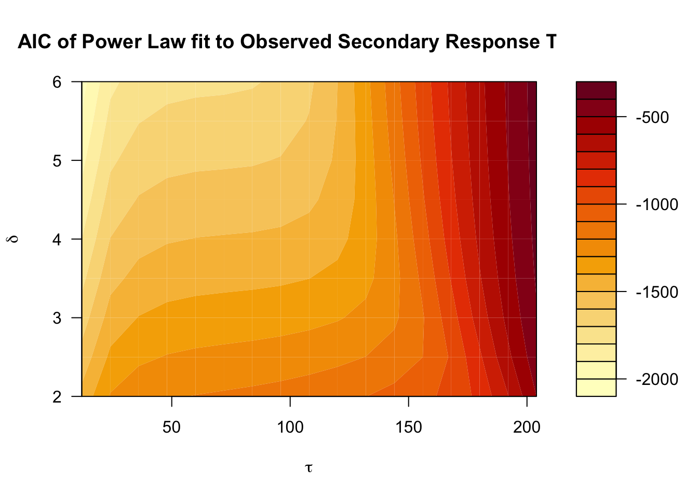
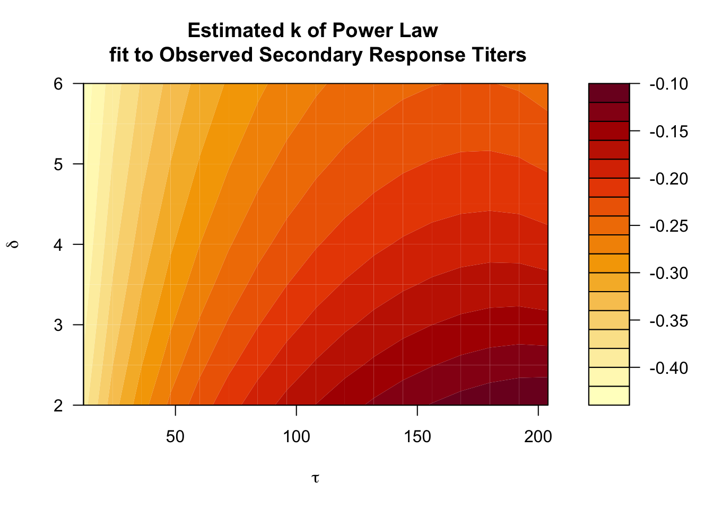
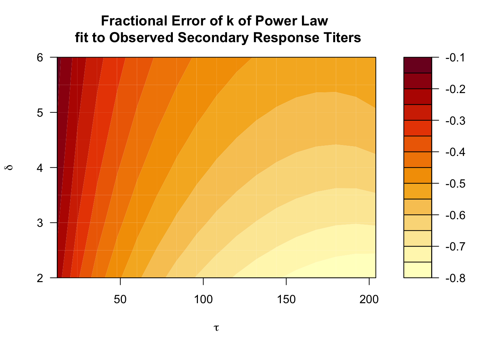
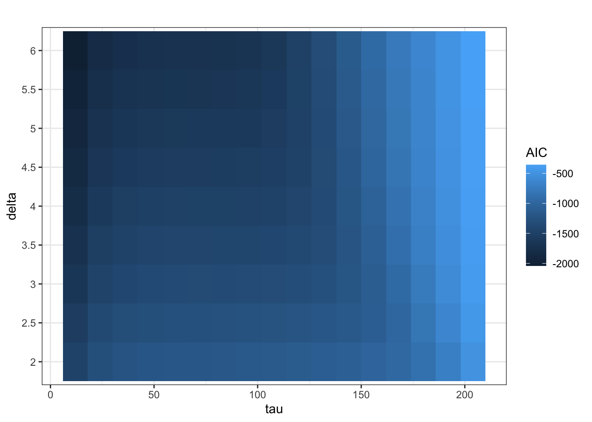
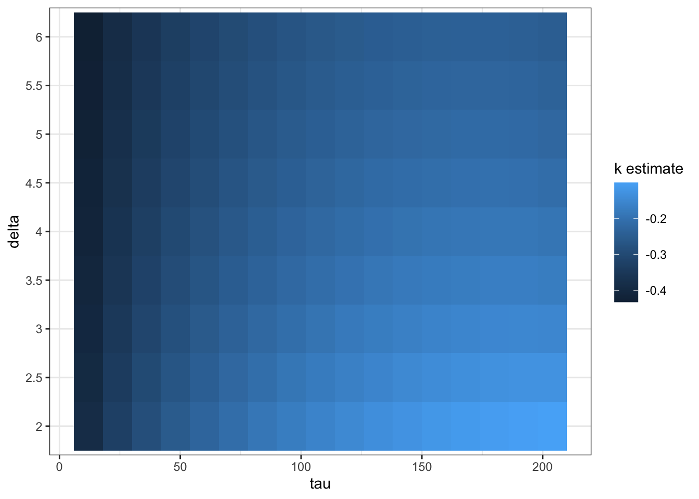

── Conflicts ────────────────────────────────────────── tidyverse_conflicts() ──
✖ dplyr::filter() masks stats::filter()
✖ dplyr::lag() masks stats::lag()
ℹ Use the conflicted package (<http://conflicted.r-lib.org/>) to force all conflicts to become errors
library(lme4)
Loading required package: Matrix
Attaching package: 'Matrix'
The following objects are masked from 'package:tidyr':
expand, pack, unpack
library(gridExtra)
Attaching package: 'gridExtra'
The following object is masked from 'package:dplyr':
combine
# code from sourcesource(here("code", "functions", "functions.R"))
Objective
The purpose of this document is to visualize how the error in power law fits to observed titers after secondary repsonses changes with the time between responses (\(\tau\)) and the fold change in observed titers after the boost (\(\delta\)).
We have previously calculated the AIC for power law fits, the estimated decay rate, and the error in the estimated decay rate from the true decay rate. Here, we visualize these quanttites as heat maps.
Load Analysis Results
Below, we load the AIC for power law fits, the estimated decay rate, and the error in the estimated decay rate from the true decay rate.
#AICsAICs =read.csv(here("results", "tables", "analysis", "AICs.csv"))#k estimatesestimated.ks =read.csv(here("results", "tables", "analysis", "estimated_ks.csv"))#error in k error.k =read.csv(here("results", "tables", "analysis", "error_k.csv"))# load taus and deltastau.and.delta =read.csv(here("data", "parameters", "tau_and_delta.csv"))
To plot these as base r conout plots, we need to reformat them as matrices with no \(\tau\) column
# add column names to indicate deltas# extracting taus and deltastaus =unique(tau.and.delta$tau)deltas =unique(tau.and.delta$delta)#formating dataframes as matrices with no labelsAICs = AICs[,-1] %>%as.matrix()estimated.ks = estimated.ks[,-1] %>%as.matrix()error.k = error.k[,-1] %>%as.matrix()
below, we plot these as contour plots:
#plot AICsplot1 =filled.contour(x = taus, y = deltas, z=AICs, lwd =2, xlab =expression(tau), ylab =expression(delta), main ="AIC of Power Law fit to Observed Secondary Response Titers")

#plot estimated ksplot2 =filled.contour(x = taus, y = deltas, z=estimated.ks, lwd =2, xlab =expression(tau), ylab =expression(delta), main ="Estimated k of Power Law \n fit to Observed Secondary Response Titers")

#plot estimated ksplot3 =filled.contour(x = taus, y = deltas, z=error.k, lwd =2, xlab =expression(tau), ylab =expression(delta), main ="Fractional Error of k of Power Law \n fit to Observed Secondary Response Titers")

#print to viewerprint(plot1)
NULL
print(plot2)
NULL
print(plot3)
NULL
heatmaps with ggplot
To plot these as heatmaps, we need to format them in long form. First, I reload the data:
#AICsAICs =read.csv(here("results", "tables", "analysis", "AICs.csv"))#k estimatesestimated.ks =read.csv(here("results", "tables", "analysis", "estimated_ks.csv"))#error in k error.k =read.csv(here("results", "tables", "analysis", "error_k.csv"))
# add column names to indicate deltas# extracting taus and deltastaus =unique(tau.and.delta$tau)deltas =unique(tau.and.delta$delta)# adding row to indicate tau and columns to indicate deltacolnames(AICs) =c("tau", deltas) colnames(estimated.ks) =c("tau", deltas) colnames(error.k) =c("tau", deltas) #AIC AICs = AICs %>%pivot_longer(cols =!tau,names_to ="delta",values_to ="AIC")#Estimated Kestimated.ks = estimated.ks %>%pivot_longer(cols =!tau,names_to ="delta",values_to ="estimated.k")#fractional errorerror.k = error.k %>%pivot_longer(cols =!tau,names_to ="delta",values_to ="error.k")
Plotting Heatmaps
Below, we plot heatmaps of AIC, estimated \(k\), and fractional error in estimated \(k\).
#AICsplot1 =ggplot() +geom_tile(data = AICs, aes(x = tau, y = delta, fill = AIC)) +theme_bw() +labs(fill ="AIC", title ="")plot1

#Estimated Ksplot2 =ggplot() +geom_tile(data = estimated.ks, aes(x = tau, y = delta, fill = estimated.k)) +theme_bw() +labs(fill ="k estimate")plot2

#Percent Error in Kplot3 =ggplot() +geom_tile(data = error.k, aes(x = tau, y = delta, fill = error.k)) +theme_bw() +labs(fill ="fractional error in k from true")plot3